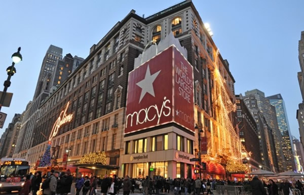
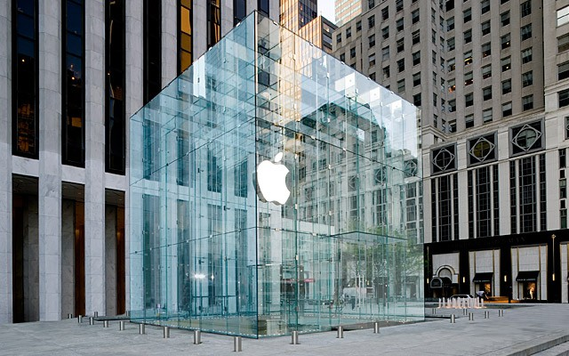
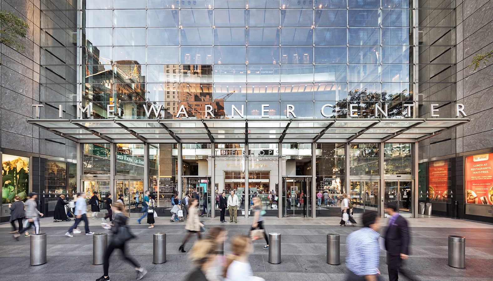
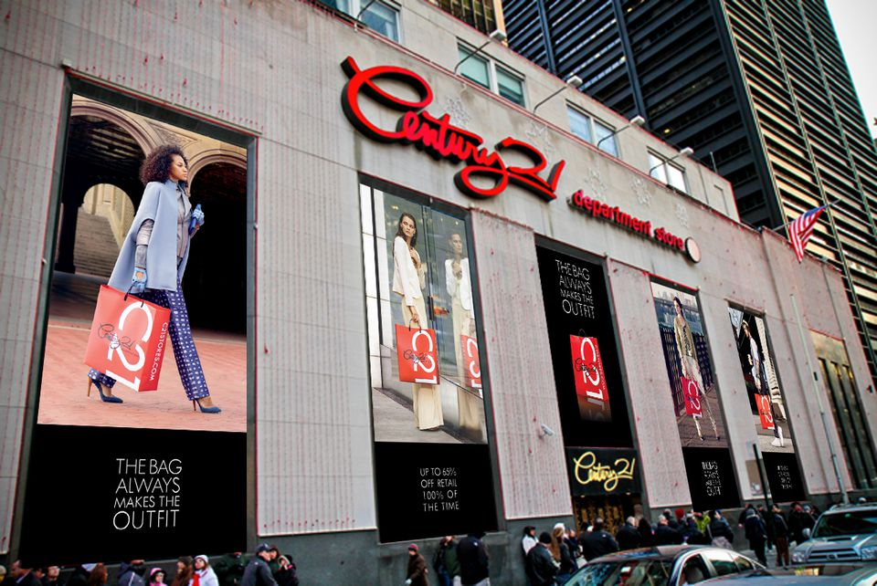
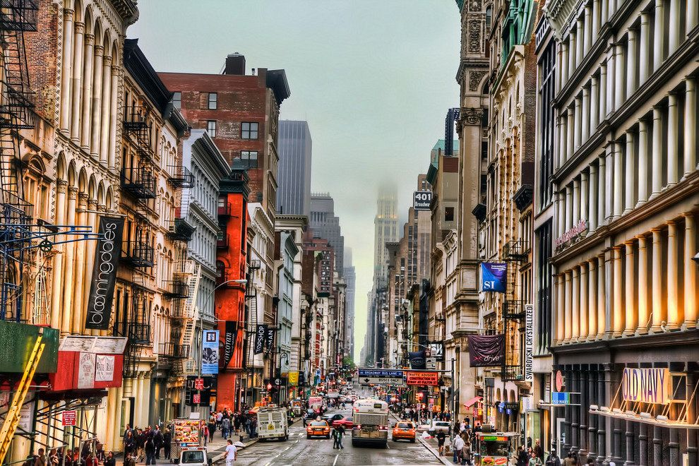

Les 5 meilleurs endroits pour faire du shopping à New York
Du marché aux puces tendance aux grands magasins connus mondialement, trouvez votre bonheur pour faire du shopping à New York et vivre un moment incroyable au cœur de meilleures boutiques de la ville.
Accros du shopping ? Bienvenus à New York. Des boutiques chics, en passant par les marchés aux puces branchés et les grands magasins connus partout dans le monde tels que Macy’s, il y a tout à NYC.
Que vous soyez à la recherche de boutons de manchette faits main, de matériel design haut de gamme, de chocolats artisanaux ou de disques vintages, vous trouverez forcément votre bonheur dans les boutiques de à New York. Alicia Drewnicki nous emmène faire un tour dans les 10 meilleurs endroits pour faire des folies en faisant du shopping à New York.
Macy’s : une institution à New York
Passez un après-midi à vous perdre dans le plus imposant grand magasin des États-Unis. Macy’s comporte 10 étages et demi avec tout ce que vous pouvez imaginer, de la mode à l’alimentation aux meubles et perruques. Les touristes étrangers peuvent se rendre directement au service d’information des visiteurs de Macy’s, montrer leur passeport et recevoir une carte de remise de 10 % pour un shopping à New York placé sous le signe des économies.
5e Avenue
La 5ème Avenue va du nord au sud de Manhattan ; la principale zone commerçante se trouve entre la 14ème et la 59ème rue. Cette avenue mythique est principalement connue pour ses boutiques de luxe et ses grands magasins.
Vous y trouverez un Apple Store, mais aussi les magasins Bergdorf Goodman, Abercrombie & Fitch, Banana Republic, Gucci, H&M, Michael Kors, Prada, Victoria’s Secret, Tiffany & Co et bien d’autres.
Time Warner Center
Le Time Warner Center, à côté de Columbus Circle, est un grand centre commercial avec des boutiques de luxe renommées. Vous y trouverez des magasins Hugo Boss, Swarovski, J. Crew et d’autres. N’oubliez pas d’aller faire un tour à l’immense Whole Foods Market au sous-sol ! Pour plus d’informations sur ce quartier, regardez notre visite guidée vidéo de Columbus Circle.
Century 21
Sans doute le magasin où vous ferez les meilleures affaires de tout votre voyage à New York. Century 21 est un gigantesque magasin d’outlet où il est possible de trouver toutes les plus grandes marques à des prix défiant toute concurrence. Envie d’un petit sac Vuitton ou Michael Kors ? De quelques paires de lunettes Rayban ? D’une paire de bottes UGG ? Ou tout simplement de vêtements de marque dégriffés ? Tout le monde trouvera son bonheur à Century 21. Moi la première, je n’en sors jamais sans au moins une petite paire de chaussures.
SoHo: Des boutiques chics et bien plus.
UAvec ses rues pavées et son architecture en fonte, le très fashion SoHo (au sud de Houston Street) est l’un des plus beaux quartiers commerçants de New York. Il y a des magasins antiques vintage, des magasins design hauts de gamme et de magnifiques galeries d’art. Vous trouverez de grands magasins populaires comme Bloomingdale’s et Barneys New York, ainsi que des boutiques uniques qui vendent de tout, des chapeaux haute couture à la taxidermie. Faire du shopping à New York, parcourir une partie de la ville et ne pas faire les magasins à SoHo serait fort dommageable.